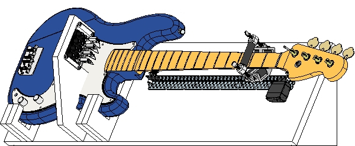

Matthew Barulic
Roboticist
Professional Projects

Greenzie
2019Atlanta-based startup building autonomous lawnmowing tech. I worked on software for the first prototype and architecture for the future product.
greenzie.com

Autonomous Fusion
2017-2019Atlanta-based startup building autonomous driving software. I was a software engineer on the team building the autonomy systems.
autonomousfusion.com

AutoRally
2014-2017An RC-scale autonomous racecar from Georgia Tech's Wall Lab. Under the direction of Dr. Jim Rehg and Brian Goldfein, I worked on everything from hardware design to track perception.
autorally.github.io

RoboJackets
2012-2018I am a former president of RoboJackets and work on hardware and software for several of the competition teams.
www.robojackets.org
Personal Projects
DIY Autonomous Car
2018Raspberry Pi-based, small scale, self-driving car.
Project Page

As a final project for Georgia Tech's CS 7633, Human-Robot Interaction, I built a bass guitar-playing robot.
Project Page
BassBot
2016As a final project for Georgia Tech's CS 7633, Human-Robot Interaction, I built a bass guitar-playing robot.
Project Page

VEX Shield for Arduino
2014This is an Arduino shield I've designed for making it easier to interface with VEX electronics (servos, sensors, etc.) from an Arduino microcontroller.
Project page

Seekur Jr.
2012This project is from my internship at GTRI ELSYS in 2012. The project uses a kinect to autonomously map and navigate its environment.
Project Page

SPOT
2010One of my early experiments in computer vision, this rover uses a webcam and on-board computer to chase balls and avoid crashes.
Project Page

Crowd Traffic
2011A mobile Android application that uses data from other app users to build a live map of traffic. Built during an internship at GSU's Sensorweb Research Laboratory.
Project Page.

Chat Rover 9000
2008This project was my first large-scale robotics project. It was a rather bulky and slow rover controlled via Skype. I entered into the GaETC tech fair in 2008, where it went on to win first in state.